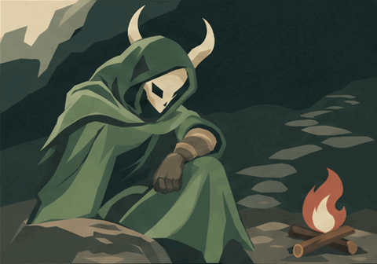

Let Go
The hand relaxes on a supported knee,and the shoulders settle.
Open original chapter GIFSPIRE · CANDIDATE FICTION
A guarded hand eases. The Silent takes one quiet breath,then looks toward the climb.

Two short chapters,9.6seconds. Native GIF plays once;reduced motion shows the opening illustration. No pause or seek controls are claimed.
The hand relaxes on a supported knee,and the shoulders settle.
Open original chapter GIFThe mask rises toward the path.The pause ends in readiness,with the figure still seated.
Open original chapter GIFThis is a future story study,not accepted game history or a gameplay effect. The ending has a horn-framing hold;see the source review.
Sources and review · Open assembled native GIF · Opening SVG